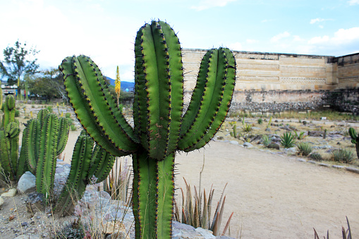
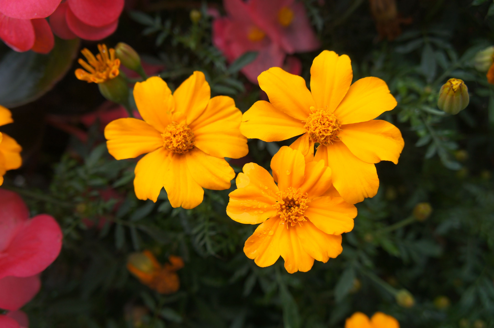

A flora mexicana é uma das mais variadas do planeta, aqui é possível encontrar pastagens, desertos, bosques de coníferas e selva tropical.
37% do território estão cobertos de plantas que sobrevivem com pouca água, 19,34% de bosques de coníferas e carvalhos e 14,14% de selva tropical.
Neste país é encontrada mais da metade das espécies de cactos que existem, dos quais se destaca o pita, utilizado para fabricar bebidas (tequila e pulque), mais de 600 variedades de orquídeas e mais de 30.000 espécies de plantas.
Biznaga (Mammillaria spp.)

É uma das plantas mexicanas mais conhecidas, ou melhor, podemos dizer que o gênero Mammillaria é sem dúvida um dos mais proeminentes e abundantes dentro da grande variedade de cactos mexicanos.
Eles são caracterizados por seu crescimento lento, mas de longa duração, bem como por habitar as regiões mais áridas e extensas do norte e centro do México.
Dália
A dália mexicana não poderia faltar na nossa lista de flores mexicanas, uma vez que ela é considerada a flor nacional do México, ocorrendo nativamente em regiões mais montanhosas.
As dálias florescem no outono e costumam não só aparecer em jardins domésticos do México como são utilizadas na culinária deste país andino.
Flores mexicanas
As flores são populares no México não só como arbustos de paisagismo e elementos decorativos como são peças chave na cultura mexicana, aparecendo em festivais tradicionais como o Dia dos Mortos, onde caveiras são decoradas utilizando flores, como homenagem aos que se foram.
FAUNA
O México é um país de diversidade biológica. Em número total de espécies, ele ocupa o quinto lugar no mundo. Ocupa o primeiro lugar no número total de espécies de répteis (640) e é o lar de mais de 1.000 espécies de aves, 450 de mamíferos (142 encontrados apenas no país) e 330 anfíbios.
O número de espécies de insetos está na casa das centenas de milhares.
MAMÍFEROS
A maioria dos mamíferos do México é encontrada nas zonas mais temperadas e incluem duas espécies de veados, carneiros selvagens, coiotes, raposas, ursos, leões da montanha, jaguares e linces, 4 espécies de coelhos e 350 tipos de roedores.
Os trópicos são o lar de animais como morcegos, aranhas e macacos bugios, o tamanduá sedoso, quatis e anta-de-baird, um animal herbívoro noturno que passa tempo na água.

Quase 30 tipos de cetáceos vivem nos mares, que vão desde a baleia azul, o maior mamífero da terra, até o menor, que é a toninha. Peixes-boi frequentam as águas quentes do litoral e podem ser encontrados em lagoas e estuários.
AVES
As aves do México são muito diversificadas, pois são uma mistura de espécies norte-americanas e sul-americanas. Em áreas pantanosas encontramos aves como maçaricos, garças e garças. Na floresta tropical podemos ver 19 espécies de papagaios, periquitos e araras e 3 espécies de tucanos.
Nas montanhas e savanas do norte vemos beija-flores, papa-moscas e aves de rapina, como o caracará com crista, falcões e águias.

RÉPTEIS E ANFIBIOS
Mais de 1000 espécies de répteis vivem no México incluindo lagartos, iguanas, monstros-de-gila, jacarés e crocodilos. Existem mais de 100 espécies de cobras (das quais 20 são venenosas.)

Sete das oito espécies de tartarugas do mar podem ser encontradas no México e todas estão ameaçadas. São elas: tartaruga-de-kemp, tartaruga-de- couro, tartaruga-verde, tartaruga-preta, tartaruga de pente, tartaruga cabeçuda e a tartaruga-oliva.
PEIXES
Existem 384 tipos de peixes de água doce no México e pelo menos 1.350 espécies oceânicas.
INSETOS
Há entre 2.200 e 2.500 variedades de borboletas e mais de 2.000 espécies de abelhas no México. Todas desempenham um papel importante de polinização das plantas.